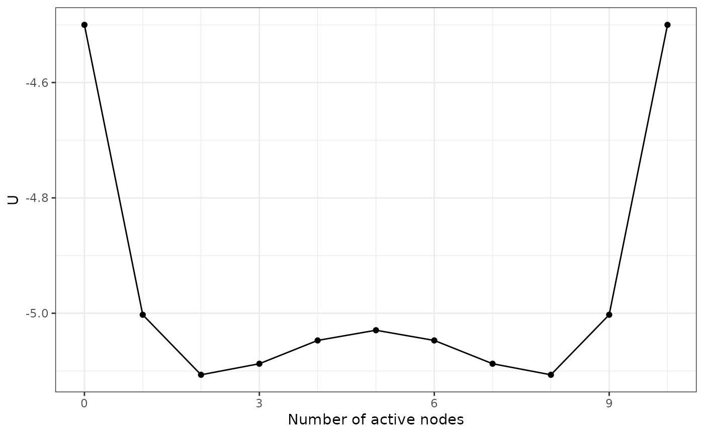

Calculate the potential value \(U(n)\) for each system state, represented by the
number of active nodes \(n\). The potential value is determined so that the Boltzmann
distribution is preserved. The Boltzmann distribution is the basis and the
steady-state distribution of all dynamic methods for Ising models, including
those used in IsingSampler::IsingSampler() and Glauber dynamics. This means
that if you assume the real-life system has the same steady-state distribution
as the Boltzmann distribution of the Ising model, then possibility that their
are \(n\) active nodes in the system is proportional to \(e^{U(n)}\).
Because of this property of \(e^{U(n)}\), it is aligned with the potential
landscape definition by Wang et al. (2008) and can quantitatively represent
the stability of different system states.
Arguments
- thresholds, weiadj
The thresholds and the weighted adjacency matrix of the Ising network. If you have an
IsingFitobject estimated usingIsingFit::IsingFit(), you can find those two parameters in its components (<IsingFit>$thresholdsand<IsingFit>$weiadj).- beta
The \(\beta\) value for calculating the Hamiltonian.
- transform
By default, this function considers the Ising network to use
-1and1for two states. Settransform = TRUEif the Ising network uses0and1for two states, which is often the case for the Ising networks estimated usingIsingFit::IsingFit().
Value
A 2d_Isingland object that contains the following components:
dist_raw,distTwo tibbles containing the probability distribution and the potential values for different states.thresholds,weiadj,betaThe parameters supplied to the function.NvarThe number of variables (nodes) in the Ising network.
Details
The potential function \(U(n)\) is calculated by the following equation: $$U(n) = -\log(\sum_{v}^{a(v)=n} e^{-\beta H(v)})/\beta,$$ where \(v\) represent a specific activation state of the network, \(a(v)\) is the number of active nodes for \(v\), and \(H\) is the Hamiltonian function for Ising networks.
References
Wang, J., Xu, L., & Wang, E. (2008). Potential landscape and flux framework of nonequilibrium networks: Robustness, dissipation, and coherence of biochemical oscillations. Proceedings of the National Academy of Sciences, 105(34), 12271-12276. https://doi.org/10.1073/pnas.0800579105 Sacha Epskamp (2020). IsingSampler: Sampling methods and distribution functions for the Ising model. R package version 0.2.1. https://CRAN.R-project.org/package=IsingSampler Glauber, R. J. (1963). Time-dependent statistics of the Ising model. Journal of Mathematical Physics, 4(2), 294-307. https://doi.org/10.1063/1.1703954
See also
make_3d_Isingland() if you have two groups of nodes that you want
to count the number of active ones separately.
Examples
Nvar <- 10
m <- rep(0, Nvar)
w <- matrix(0.1, Nvar, Nvar)
diag(w) <- 0
result1 <- make_2d_Isingland(m, w)
#> The Ising network uses -1 and 1 for two states. If it uses 0 and 1, (which is
#> often the case for psychological datasets), set `transform = TRUE`.
#> This message is displayed once every 8 hours.
plot(result1)
